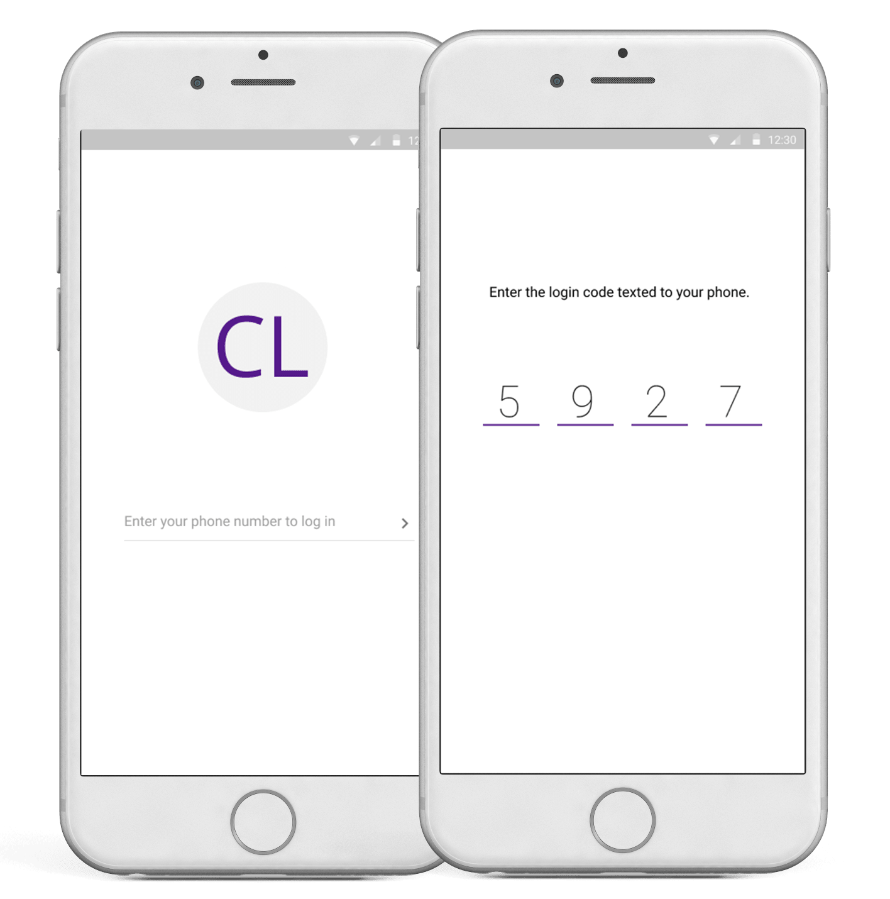
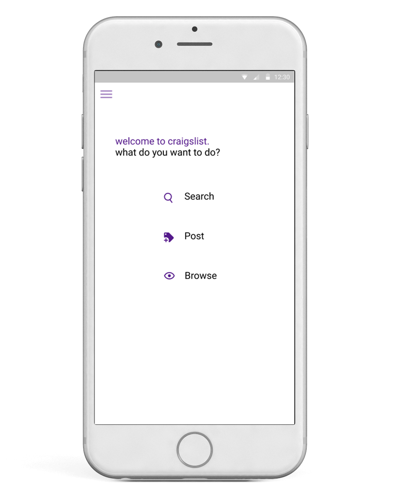

My Role
UX Designer + Prototyper
Project Type
Redesign, Chatbot
4 days | February 2017
I created a better shopping experience for students who want to buy furniture on Craigslist.
I had been reading about chatbots in 2017 UX trends and wanted to experiment with designing one.
Challenge
Students Feel Unsafe Using Craigslist
User interviews revealed three major pain points.
Anonymity
Anonymity makes it scary for students to meet with a stranger. Students also feel the item received is low quality.
Communication
Unclear communication with the seller over emails and phone is slow. There is a lot of information to confirm.
Search
Reliably searching on the UI is difficult when there are so many posts to look through.
Introducing: Reputation, the Craigslist Chatbot, and Context-Based Filtering
Filtering the search helps the student narrow down to the item they want. The friendly in-app chatbot then helps to coordinate communication between buyer and seller while removing the anxiety and stress of speaking with a stranger.
After the exchange, the buyer and seller are able to rate the interaction, providing each other reputation data for future buyers and sellers to view.
Personas
Meet Sally Madison
Sally was created from user interview findings.
- Sophomore at NYU who is furnishing her first apartment
- Looking for a small, cheap couch that is nearby
- Her friend, John, has a car and has offered to help her move the couch and keep her company
How It Works
Digestible records food-purchasing behavior via grocery and resturant receipts updates to their electronic health record found at the doctor's office. According to the diet guidelines set by the doctor, the app provides small recommendations for food substitutions.
Onboarding
Sally logs into Craigslist with her phone number and a code sent to her phone.
This create an account for her and provides security. A fake phone number is difficult to create.

Landing Page
The initial screen keeps the simple, minimal nature of Craigslist.
This redesign was built as a mobile application since students are always on the go.

Payment
Patients and doctors can interact year-round instead of only at yearly appointments.
This provides motivation to patients and helps improve the relationship between the users.
Context-Based Filtering
Sally searches for a couch. The initial results show prices that are far out of her budget.
Context-based filtering allows Sally to find a couch fitting her requirements and price point. Here, something like seating capacity matters, but it is not a filter she would expect to see she were searching for a treadmill.

View Results
As Sally browses the filtered results, she compares images, description, prices, and seller ratings.
Sally decides to buy a couch from Jason because he seems like a reliable seller and the couch meets her requirements.
Chatbot Communication
The chatbot ensures that Sally doesn't have to deal with the axiety of speaking with a stranger. Craigslist acts as a medium between the buyer and seller.
Sally easily arranges meeting time, payment method, and transportation method with Jason.
Reminder Notifications
Notifications remind both Sally and Jason of the meeting, and the real-life interaction begins. Sally inspects the couch and decides to take it.
Confirm Transaction
Sally receives a notification asking if the transaction is complete. She selects YES, which sends notification to Jason asking for a cnfirmation of payment.
When Jason selects YES, his listing is removed from the Craigslist search results in order to prevent future buyers from contacting about a couch that has already been sold.

Reputation In the Community
Sally (and Jason!) rate the experience with each other in order to help build reputation in the Craigslist community.
Research + Design Process
Anonymity Is a Double-Edged Sword
Craigslist has a strong brand as an anonymous marketplace for local sales.
Compared to competitors in online shopping and local interactions, Craigslist lags in the trust category.
User research revealed that anonymity gives users comfort in having the ability to hide themselves, but it creates fear since they don't know anything about other users.
__________
Brainstorming Solutions To Pain Points
Using an affinity diagram, I grouped my findings into the three categories of anonymity and trust, communication, and filtering.
I asked students for feedback in order to determine the best solution for a redesigned Craigslist.
__________
Visual Design
Craigslist emerged in 1995, with the look and feel designed to mimic newspaper classifieds, but the reality is not many read newspapers today. I retained Craiglist's renown minimalism, but decided to focus my redesign on creating a mobile app since students are always on-the-go with their phones in hand.
Future Work
Testing and Seller Interface
if I had more time to work on this redesign concept, I would like to test my design with users in order to see how to better improve.
Because the challenge asked specifically about the student buyer experience, I focused on that aspect. However, Craiglist is a two-way marketplace, so I would like to flesh out the seller screens, as well as show how the desktop application would appear.